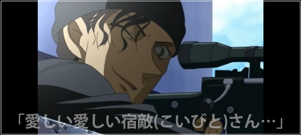
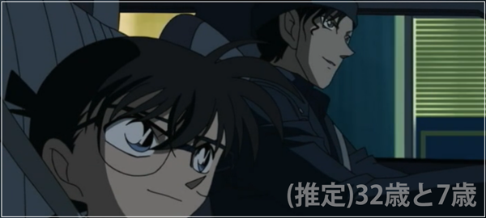
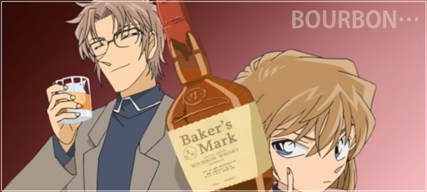
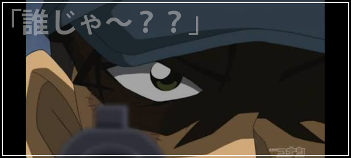
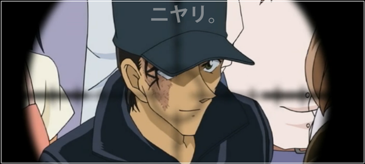
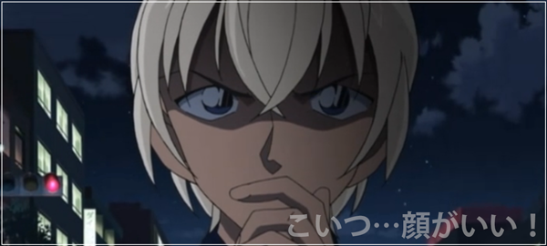
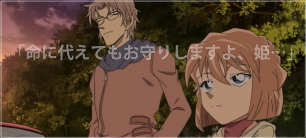
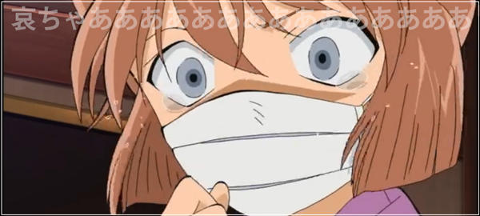
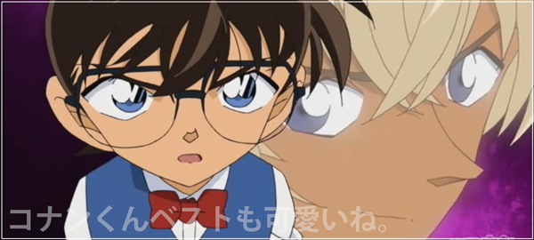
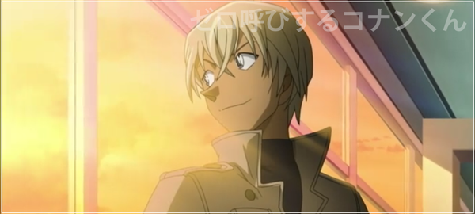

あらすじ（になる話）
緋色シリーズを見る前に、是非とも見ておいてほしい話の一覧。実質【ギスギスしたお茶会】のラスト部分が、緋色シリーズの序盤となる。
【ブラックインパクト！組織の手が届く瞬間(425)】
水無怜奈の初登場回。
彼女が黒の組織の一員、“キール”だということが判明して…？
【赤と黒のクラッシュ(495-504)】
“キール”こと水無怜奈を巡る、江戸川コナン・FBI vs 黒の組織を描いた長編。
ここでの伏線が“緋色シリーズ”にて凡そ回収されるため、必見。
【赤白黄色と探偵団/コナンvsW暗号ミステリー(509-510)】
沖矢昴の初登場回。
地味に伏線があったりする。
【探偵団vs強盗団(563-564)】
銀行強盗の事件。
赤井秀一によく似た、火傷を負った男が登場。
【危機呼ぶ赤い前兆/黒き13の暗示/迫る黒の刻限/赤く揺れる照準(578-581)】
FBI、赤井秀一に似た男、そして沖矢昴が登場。
赤井秀一の生死を巡り、それぞれが動き出す…？
【探偵たちの夜想曲(672-674)】
“バーボン”の正体の候補である沖矢昴・世良真純・安室透が一同に会する回。
江戸川コナンが犯人に誘拐されるが…？
【泡と湯気と煙(684-685)】
今まで沖矢昴を避けていた灰原哀が初めて彼と2人きりとなり、
彼の“エリア”に踏み込もうとしたエピソード。
【漆黒の特急(701-704)】
豪華列車で起きる密室殺人、灰原哀を賭けた黒の組織との対決。
今回で組織の一員“バーボン”の正体が明らかになる。
【ジョディの追憶とお花見の罠(734)】
神社で起きた殺人事件。江戸川コナンとジョディが漆黒の特急で得られた情報を提供。
そして赤井秀一に似た男を目撃したという話を聞き…？
【ギスギスしたお茶会】
妃英理が手術を行うため毛利小五郎と共に杯戸中央病院へ向かった江戸川コナン。
そこで安室透と遭遇し、楠田陸道という男について尋ねられ…。